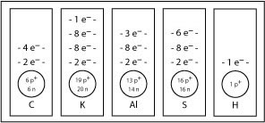

Module 1—Chemical Foundations
 Explore
Explore
The organization of data into patterns or common characteristics helps scientists understand the material they are studying. In dealing with matter, elements are classified according to their atomic numbers. The atomic number indicates the number of protons (positively charged particles) found within the atom. Along with the atomic number, the elements are also categorized according to how they react. The result of this classification is the Periodic Table of the Elements.
The first periodic table was published in 1869 by Russian scientist Dmitri Mendeleev. He listed the data for the known elements—there were approximately 60 elements at that time—on file cards and set about arranging them in patterns. He left spaces in his arrangement for elements he believed were yet to be discovered. Because of the patterns within the periodic table, he was even able to predict the properties of these undiscovered elements. This held true as new elements were discovered and placed in the table.
group: a set of elements with similar chemical properties; the elements in a vertical column in the main part of the periodic table; also called a family
family: see group
period: a horizontal row of elements in the periodic table whose properties gradually change from metallic to non-metallic from left to right along the row
The elements within the table are positioned according to group (or family) and period. Groups correspond to the vertical columns on the periodic table and are labelled from 1 to 18 across the top of the table. Periods denote the horizontal rows on the periodic table. There are seven periods on the table.
 Read
Read
Read pages 14 to 16 in the textbook to review the organization of the periodic table. A version of the periodic table is also available in the Chemistry Databook. You will often use this version of the table as you work through this course and Chemistry 30.
Many versions of the periodic table are available on the Internet. Use the search terms “periodic table” and “interactive” to find versions that may even allow you to hear the pronounciation of element names.
As you work through this course you will use many values shown in the cells within the periodic table. In many cases, the values listed identify properties of each element and were used by Mendeleev and other scientists to construct and refine the position of elements on the periodic table.
 Self-Check
Self-Check
SC 1. Use this tutorial to check your understanding of the information contained on the periodic table.
Read
proton: a positively charged subatomic particle found in the nucleus
neutral: having neither acidic nor basic properties; having a net charge of zero (electrically neutral)
neutron: an uncharged subatomic particle present in the nuclei of most atoms
electron: a small, negatively charged subatomic particle; has a specific energy within an atom
From your work in previous science courses you have learned that the atom has a dense nucleus that contains positively charged particles called protons and neutral particles called neutrons. The nucleus is orbited by negatively charged particles called electrons. Read pages 18 to the summary on page 23 to further review the atom’s structure and scientific work that led to the current understanding of the structure.
Work through “SAMPLE problem 1.1” and the “Communication example” on page 22 of the textbook to review drawing atoms using a representation consistent with Bohr’s theory.
Self-Check
SC 2. How many protons, neutrons, and electrons are found in the most common isotope of calcium?
SC 3. What would a magnesium atom look like? Find magnesium on the periodic table, and sketch its energy-level diagram.
SC 4. Use the periodic table and the diagram for magnesium as references to complete the following energy-level diagrams.
![A drawing contains five rectangles. Each rectangle is positioned so that its longer side runs vertically. In the lower third of each rectangle is a circle. Below each circle is a symbol for an element. The upper two-thirds of each rectangle is empty. The first rectangle on the left has the symbol upper case C. The second rectangle has the symbol upper case K. The third rectangle has the symbol upper case A and lower case L. The fourth rectangle has the symbol upper case S. The fifth rectangle has the symbol upper case H.](../../images/m1/017_chart.jpg)
Self-Check Answer
SC 2. Calcium has an atomic number of 20. This means there are 20 protons in the nucleus and 20 electrons orbiting around the nucleus. The atomic mass is 40.08. To determine the number of neutrons in the nucleus, simply subtract the atomic number from the atomic mass to get a value of 20 neutrons.
SC 3. With an atomic number of 12, there will be 12 protons in the nucleus and 12 electrons orbiting the nucleus. The atomic mass is 24.31, so there are 12 neutrons in the nucleus. Because magnesium has 12 electrons, 2 electrons appear in the first energy level, 8 electrons appear in the second energy level, and the remaining 2 electrons appear in the third energy level.
![A diagram shows a black sphere surrounded by three circles. Below the diagram is the upper case letter M, followed by the lower case letter g. Inside the black sphere is the text 12 p followed by a plus sign, and 12 n. The first circle surrounding the sphere has two small red spheres located at opposite sides of the circle. The second circle is larger than the first one and has 8 small red spheres equally spaced around the circle. The third circle is larger than the second circle and has 2 small red spheres located at opposite sides of the circle.](../../images/m1/008_atomic.gif)
SC 4.
